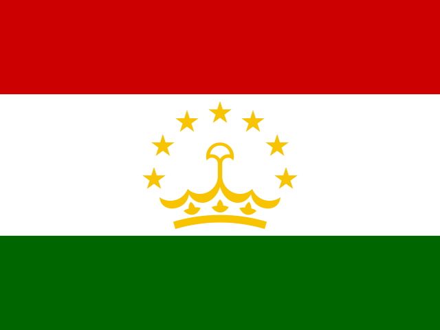

복싱 (Boxing)
2028 LA 올림픽 복싱에는 14개 세부종목이 있다.
![복싱 한눈에 보기. LA28 출전 규모 248명 (14체급). 경기 방식: 체급별 단판 토너먼트 → 8강 → 준결승 (패자 2명 동메달) → 결승. 핵심 규칙: 3분 3라운드, 심판 5명이 라운드마다 10점제로 채점한다. 국가당 체급 1명만 나간다. 준결승에서 진 두 선수가 모두 동메달을 받는다. 출전권 배정 (성별 124명 (남녀 동일)): 2027 세계선수권 22, 대륙 예선 5곳 56, 세계 예선 1 23, 세계 예선 2 (14–20) 16, 개최국 (최대) 3, 보편성 4. 체급별 쿼터 (남녀 같은 구조): 경량 4체급 (각) 16–20명 (세계선수권 4, 대륙 예선 8, 세계 예선·개최국·보편성 가변); 나머지 3체급 (각) 16–20명 (세계선수권 2, 대륙 예선 8, 세계 예선·개최국·보편성 가변). 예선 구조 (차례대로): 세계선수권 (아스타나) 22명 (2027.04, 체급 상위); 대륙 예선 5곳 56명 (2027–28, 세계선수권 미확보 국가); 세계 예선 1 22–24명 (2028, 체급당 1명); 세계 예선 2 14–20명 (2028); 개최국·보편성 최대 7명 (미국 최대 3 · 보편성 4).](assets/summary/olboxing.svg)
2026 주요 대회 결과 2026-11-06 23:44 KST
위키백과 대회 문서에서 자동으로 모은다. 대회 중에는 한 시간마다 새로 읽는다. 한국 선수가 있는 줄은 붉게 칠했다. 하계 실시간 전체 →
아이치·나고야 아시안게임 아이치·나고야 · 09.19~10.04 종료 결과 11/11종목 · 한국 금0 은2 동0
| 종목 | 금 | 은 | 동 |
|---|---|---|---|
| 남자 | |||
| 55 kg | |||
| 60 kg |  Akmal Ubaidov 타지키스탄 | ||
| 70 kg | |||
| 80 kg | |||
| 90 kg | Parviz Karimov 타지키스탄 | ||
| +90 kg | |||
| 여자 | |||
| 51 kg | |||
| 54 kg | |||
| 60 kg | |||
| 65 kg | |||
| 75 kg | |||
메달 순위:  인도 3-0-3 ·
인도 3-0-3 ·  우즈베키스탄 2-1-4 ·
우즈베키스탄 2-1-4 ·  카자흐스탄 2-0-3 ·
카자흐스탄 2-0-3 ·  중국 1-3-2 ·
중국 1-3-2 ·  차이니스 타이베이 1-1-0 ·
차이니스 타이베이 1-1-0 ·  일본 1-0-3 ·
일본 1-0-3 ·  태국 1-0-0 ·
태국 1-0-0 ·  대한민국 0-2-0
대한민국 0-2-0
출처: 위키백과 Boxing at the 2026 Asian Games · 2026-11-06 22:37 읽음
예선 규정
이벤트 및 출전 쿼터
남녀 각 7체급에 248명이 출전한다. 쿼터는 선수 이름으로 배정되며 국가당 체급 1명이다.
| 성별 | 일반쿼터 | 개최국쿼터 | 보편성쿼터 | 합계 |
|---|---|---|---|---|
| 남자 | 117 | 3 | 4 | 124 |
| 여자 | 117 | 3 | 4 | 124 |
| 합계 | 234 | 6 | 8 | 248 |
체급별 정원은 16–20명이다. 세계 예선 2의 자리 수는 개최국 체급에 따라 달라진다.
예선 경로
세계선수권 → 대륙 예선 → 세계 예선 1 → 세계 예선 2 순이다. 대회별 배정은 예선 대회 문서에 있다.
남자 7체급
남자 선발 경로
124명 · 규정 ↗
| 경로 | 쿼터 | 선발 방식 |
|---|---|---|
| 2027 세계선수권 (아스타나) | 22명 | [1] |
| 대륙 예선 5곳 | 56명 | [2] |
| 세계 예선 1 (2028) | 24명 | [3] |
| 세계 예선 2 (2028) | 14–18명 | [4] |
| (D.2) 개최국쿼터 | 최대 3명 | [5] |
| (D.3) 보편성쿼터 | 4명 | [6] |
- [1]2027.04 카자흐스탄 아스타나. 체급 상위 선수에게 정원표만큼(경량 4체급 4명, 나머지 2명). 국가 상한을 지킨다.
- [2]아시아·유럽·팬암 체급당 2명, 아프리카·오세아니아 1명. 세계선수권에서 그 체급 쿼터를 얻지 못한 국가만 출전. 체급에 4명 이상, 1위가 1승 이상이어야 유효. 대륙종합대회 겸용이면 이미 확보한 체급에도 다른 선수를 낼 수 있지만 그 선수는 쿼터를 얻지 못한다.
- [3]앞 경로에서 그 체급 쿼터가 없는 국가만 체급당 1명.
- [4]앞 경로에서 그 체급 쿼터가 없는 국가만. 개최국 체급 확정에 따라 자리 수가 달라진다.
- [5]미국에 성별 최대 3명(경량 4체급 중). 대륙 예선·세계 예선 1에서 얻은 쿼터만큼 줄어든다.
- [6]경량 4체급에 1명씩. 삼자위원회가 배정한다. IOC 초청 2027.10.01, 신청 마감 2028.01.15.
여자 7체급
여자 선발 경로
124명 · 규정 ↗
| 경로 | 쿼터 | 선발 방식 |
|---|---|---|
| 2027 세계선수권 (아스타나) | 22명 | [1] |
| 대륙 예선 5곳 | 56명 | [2] |
| 세계 예선 1 (2028) | 22명 | [3] |
| 세계 예선 2 (2028) | 16–20명 | [4] |
| (D.2) 개최국쿼터 | 최대 3명 | [5] |
| (D.3) 보편성쿼터 | 4명 | [6] |
- [1]2027.04 카자흐스탄 아스타나. 체급 상위 선수에게 정원표만큼(경량 4체급 4명, 나머지 2명). 국가 상한을 지킨다.
- [2]아시아·유럽·팬암 체급당 2명, 아프리카·오세아니아 1명. 세계선수권에서 그 체급 쿼터를 얻지 못한 국가만 출전. 체급에 4명 이상, 1위가 1승 이상이어야 유효. 대륙종합대회 겸용이면 이미 확보한 체급에도 다른 선수를 낼 수 있지만 그 선수는 쿼터를 얻지 못한다.
- [3]앞 경로에서 그 체급 쿼터가 없는 국가만 체급당 1명.
- [4]앞 경로에서 그 체급 쿼터가 없는 국가만. 개최국 체급 확정에 따라 자리 수가 달라진다.
- [5]미국에 성별 최대 3명(경량 4체급 중). 대륙 예선·세계 예선 1에서 얻은 쿼터만큼 줄어든다.
- [6]경량 4체급에 1명씩. 삼자위원회가 배정한다. IOC 초청 2027.10.01, 신청 마감 2028.01.15.
체급별 예선 규정
체급마다 정원(16·18·20명)과 대회별 배정이 다릅니다. 앞 4개 체급에만 개최국·보편성 자리가 있습니다. 체급을 누르면 그 체급의 좌석 그림·규정 표와 한국 주요 선수 문서로 이동합니다.
| 체급 | 배정 | 한국 주요 선수 |
|---|---|---|
| 남자 55kg | 2027 세계선수권 4 + 대륙 예선 5개 8 + 세계 예선 1 2 + 세계 예선 2 2 + 개최국 또는 세계 예선 2 0–1 + 보편성 1 = 18명 | 신재용 |
| 남자 60kg | 2027 세계선수권 4 + 대륙 예선 5개 8 + 세계 예선 1 2 + 세계 예선 2 2 + 개최국 또는 세계 예선 2 0–1 + 보편성 1 = 18명 | 장동환 |
| 남자 65kg | 2027 세계선수권 4 + 대륙 예선 5개 8 + 세계 예선 1 4 + 세계 예선 2 2 + 개최국 또는 세계 예선 2 0–1 + 보편성 1 = 20명 | — |
| 남자 70kg | 2027 세계선수권 4 + 대륙 예선 5개 8 + 세계 예선 1 4 + 세계 예선 2 2 + 개최국 또는 세계 예선 2 0–1 + 보편성 1 = 20명 | 김준수 |
| 남자 80kg | 2027 세계선수권 2 + 대륙 예선 5개 8 + 세계 예선 1 4 + 세계 예선 2 2 = 16명 | 김민성 |
| 남자 90kg | 2027 세계선수권 2 + 대륙 예선 5개 8 + 세계 예선 1 4 + 세계 예선 2 2 = 16명 | 김기채 |
| 남자 +90kg | 2027 세계선수권 2 + 대륙 예선 5개 8 + 세계 예선 1 4 + 세계 예선 2 2 = 16명 | 주태웅 |
| 여자 51kg | 2027 세계선수권 4 + 대륙 예선 5개 8 + 세계 예선 1 2 + 세계 예선 2 2 + 개최국 또는 세계 예선 2 0–1 + 보편성 1 = 18명 | 박초롱 |
| 여자 54kg | 2027 세계선수권 4 + 대륙 예선 5개 8 + 세계 예선 1 2 + 세계 예선 2 2 + 개최국 또는 세계 예선 2 0–1 + 보편성 1 = 18명 | 임애지 |
| 여자 57kg | 2027 세계선수권 4 + 대륙 예선 5개 8 + 세계 예선 1 4 + 세계 예선 2 2 + 개최국 또는 세계 예선 2 0–1 + 보편성 1 = 20명 | — |
| 여자 60kg | 2027 세계선수권 4 + 대륙 예선 5개 8 + 세계 예선 1 2 + 세계 예선 2 2 + 개최국 또는 세계 예선 2 0–1 + 보편성 1 = 18명 | 오연지 |
| 여자 65kg | 2027 세계선수권 2 + 대륙 예선 5개 8 + 세계 예선 1 4 + 세계 예선 2 4 = 18명 | — |
| 여자 70kg | 2027 세계선수권 2 + 대륙 예선 5개 8 + 세계 예선 1 4 + 세계 예선 2 2 = 16명 | — |
| 여자 75kg | 2027 세계선수권 2 + 대륙 예선 5개 8 + 세계 예선 1 4 + 세계 예선 2 2 = 16명 | — |
개최국·보편성 쿼터
개최국 미국은 성별 최대 3명을 보장받는다(경량 4체급). 대륙 예선·세계 예선 1에서 얻은 쿼터만큼 줄어든다. 쓰지 않은 자리는 세계 예선 2로 넘어간다.
보편성 쿼터는 성별 4명(경량 4체급)이다. IOC 초청 2027.10.01, 신청 마감 2028.01.15.
참가 자격
올림픽 헌장(제41조 국적, 제43조 세계반도핑규약 및 경기 조작 방지 규정), 여성 카테고리 보호에 관한 IOC 정책, IOC 참가 조건 및 World Boxing 규정을 충족해야 한다.
- 1988.01.01–2009.12.31 출생.
- LA28 World Boxing 이벤트 규정(2027.03 공표 예정) 준수.
- LA28 복싱 예선 대회에 최소 1회 출전 (개최국·보편성도 해당).
- World Boxing 가맹 국가 연맹 소속.
쿼터는 선수 이름으로 배정된다. 국가당 체급 1명이다.
예선 일정
예선 및 대회 일정
2026년에는 복싱 예선이 없다. 예선 기간은 2027.04.01에 시작한다.
| 날짜 | 일정 |
|---|---|
| 2027.03 | LA28 World Boxing 이벤트 규정 공표 예정 |
| 2027.04.01 | 올림픽 예선 기간 시작 |
| 2027.04 | 세계선수권 · 아스타나 |
| 2027 (미정) | 아프리카·아시아·유럽(유러피언게임) 예선 |
| 2027–2028 (미정) | 오세아니아·팬암 예선 |
| 2027.10.01 | IOC 보편성쿼터 신청 안내 |
| 2028.01.15 | 보편성 신청 마감 |
| 2028 (미정) | 세계 예선 1 · 2 |
| 2028.05.31 | 예선 기간 종료 |
| 2028.06.26 | LA28 스포츠 엔트리 마감 |
직전 올림픽 메달리스트
2024 파리 올림픽
| 세부종목 | 금 | 은 | 동 |
|---|---|---|---|
| 남자 51kg | Hasanboy Dusmatov (UZB) | Billal Bennama (FRA) | Junior Alcántara (DOM) / Daniel Varela de Pina (CPV) |
| 남자 57kg | Abdumalik Khalokov (UZB) | Munarbek Seiitbek Uulu (KGZ) | Charlie Senior (AUS) / Javier Ibáñez (BUL) |
| 남자 63.5kg | Erislandy Álvarez (CUB) | Sofiane Oumiha (FRA) | Wyatt Sanford (CAN) / Lasha Guruli (GEO) |
| 남자 71kg | Asadkhuja Muydinkhujaev (UZB) | Marco Verde (MEX) | Omari Jones (USA) / Lewis Richardson (GBR) |
| 남자 80kg | Oleksandr Khyzhniak (UKR) | Nurbek Oralbay (KAZ) | Cristian Pinales (DOM) / Arlen López (CUB) |
| 남자 92kg | Lazizbek Mullojonov (UZB) | Loren Alfonso (AZE) | Enmanuel Reyes (ESP) / Davlat Boltaev (TJK) |
| 남자 +92kg | Bakhodir Jalolov (UZB) | Ayoub Ghadfa (ESP) | Nelvie Tiafack (GER) / Djamili-Dini Aboudou Moindze (FRA) |
| 여자 50kg | Wu Yu (CHN) | Buse Naz Çakıroğlu (TUR) | Nazym Kyzaibay (KAZ) / Aira Villegas (PHI) |
| 여자 54kg | Chang Yuan (CHN) | Hatice Akbaş (TUR) | 방철미 (PRK) / 임애지 (KOR) |
| 여자 57kg | Lin Yu-ting (TPE) | Julia Szeremeta (POL) | Esra Yıldız (TUR) / Nesthy Petecio (PHI) |
| 여자 60kg | Kellie Harrington (IRL) | Yang Wenlu (CHN) | Wu Shih-yi (TPE) / Beatriz Ferreira (BRA) |
| 여자 66kg | Imane Khelif (ALG) | Yang Liu (CHN) | Janjaem Suwannapheng (THA) / Chen Nien-chin (TPE) |
| 여자 75kg | Li Qian (CHN) | Atheyna Bylon (PAN) | Caitlin Parker (AUS) / Cindy Ngamba (EOR) |
링크 없는 행은 LA28에 없는 파리 2024 세부종목이다. 출처: Wikipedia 각 종목 2024 하계 올림픽 메달 표.
대한민국
한국 출전 전망
2026-10-04 기준 참고현재 성적을 LA28 규정에 단순 적용한 참고치이며 2028 확정 전망이 아님.
인원 범위 미산정 · 아시아 예선 체급당 2명이 현실적 경로
아시안게임은 복싱 예선이 아니다. 세계선수권 직행은 체급당 2–4명뿐이라, 체급당 2명이 걸린 2027 아시아 예선과 세계 예선 두 번이 현실적인 길이다.
| 선수·팀 | 공개 성적 | 근거 |
|---|---|---|
| 장동환 | 아시안게임 남자 60kg 은 | 한국일보 · 2026.10.02 |
| 김민성 | 아시안게임 남자 80kg 은 | 한국일보 · 2026.10.02 |
체급 개편: 남자 60kg·80kg은 LA28 체급과 이름이 같다. 여자는 51–75kg 7체급이다.
보편성·개최국: 경량 4체급에만 있다.
자료 기준: 2026 아이치·나고야 아시안게임 복싱 결과.
한국 선수단 구성 계산 세부종목별 경로·등급·확률로 인원 분포와 시나리오를 계산한 문서
복싱 · 올림픽예선 | 규정 확인 2026.10.04 · 한국 전망 기준 2026.10.04
각주
외부 링크
공식 근거
- World Boxing · LA28 Qualification System (PDF, 2026.08.05)
- Olympics.com · 아시안게임 한국 메달리스트 (2026.10.04)
- 한국일보 · 장동환·김민성 동반 은메달 (2026.10.02)
규정 확인일: 2026.10.04. IOC가 게시한 World Boxing 원문 PDF(11쪽, Version as of 5 August 2026)를 기준으로 정리했다. 원문 B.1은 개최국쿼터를 성별 3명으로, 체급 배분표는 0–4로 적는다. D.2가 성별 최대 3명 보장이라 이 문서는 3명으로 적었다. 일정표 날짜는 대부분 'XXX·TBD'로 비어 있다. 기존 복싱 페이지의 2026.8.5 버전 표기와 일치한다. 본 문서는 비공식 한국어 요약이며 최종 적용은 World Boxing 공지를 따른다.